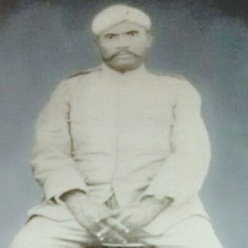
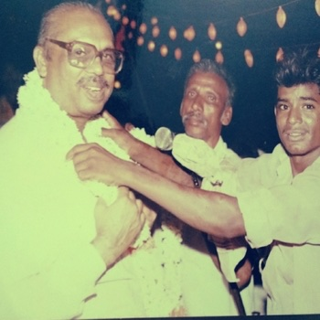

First Generation
Mr. S Fakhruddin
- Prohibition Inspector
Three generations of public service, enterprise, and community leadership.
Across generations, the family has carried the Athar surname and an S prefix that traces each line back through fathers — from Kadiri and Anantapur to Bengaluru today.
SMY stands for S M Yusuf — linking Mohammed Yesdani Athar to his father and the generations before him. This site, atharsmy.com, carries that family name forward.

First Generation
Second Generation

Third Generation